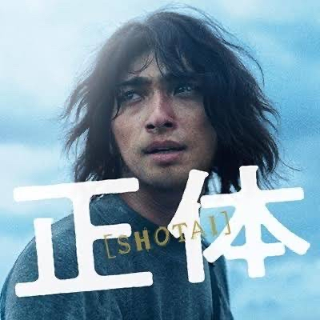
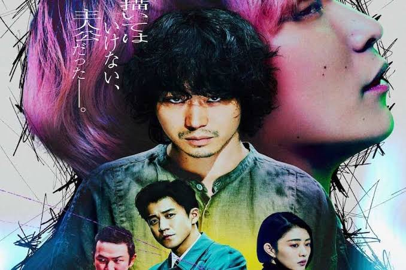
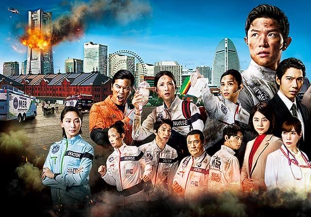

好きな映画・ドラマのポイント
-
正体
- 逃亡しながら“別人”として生きる → 錦木はさまざまな名前と姿で4つの人生を渡り歩く
- 本当の「正体」と事件の真相が徐々に明かされる → なぜ他人の中に入り込むのか、ラストで明らかに

-
キャラクター
- 現実と創作が交錯する → 主人公が描いた“架空の殺人犯”が現実の事件として起こり始める
- 犯人・両角は実在する“キャラクター”だった → モデルの人物（Fukase演じる）も登場して接近

-
TOKYO MER
- TOKYO MER vs YOKOHAMA MER の対立と連携 → チームの在り方が問われる
- 喜多見の“過去”と“覚悟”が描かれる → 海外の医療活動や命への向き合い方が明らかに
